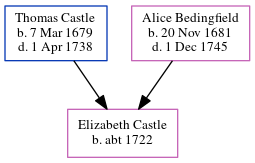

Elizabeth Cowell (née Wales) c1768 - c1861
[ Home ] | [ Calendar ] | [ Surnames Index ] | [ Errors ] | [ Family History ]Elizabeth Wales, the wife of William Castle Cowell (the four times great-uncle of Nigel Horne), was born in Kent, England c. 17681 and married William (with whom she had 8 children: Sarah, Ann, Sarah Fowler, Susanna, Susanna Eleanor, William Castle, Thomas Castle and John) in St Peters, Thanet, Kent on 18 Jul 17983. On 6 Jun 1841, she was living at George Hill, St Peters, Thanet, Kent1.
She died c. Feb 1861 in Thanet, Kent, England2.
Children
- Sarah was born on 21 Feb 1799
- Ann was born on 13 Feb 1801
- Sarah Fowler was born on 14 Feb 1804
- Susanna was born c. 1806
- Susanna Eleanor was born on 15 Apr 1808
- William Castle was born on 10 Feb 1811
- Thomas Castle was born c. 1814
- John was born c. 1817
Citations
- 1841 England, Wales & Scotland Census - Findmypast (was age 73 and the wife of the head of the household)
- England & Wales deaths 1837-2007 - Findmypast
- England Marriages 1538-1973 - Findmypast
Media
England & Wales deaths 1837-2007 - BMD/D/1861/1/AD/000633/032
1841 England, Wales & Scotland Census - GBC-1841-0013965436
Family Tree
Map
Generated by ged2site. Last updated on Jul 3, 2024